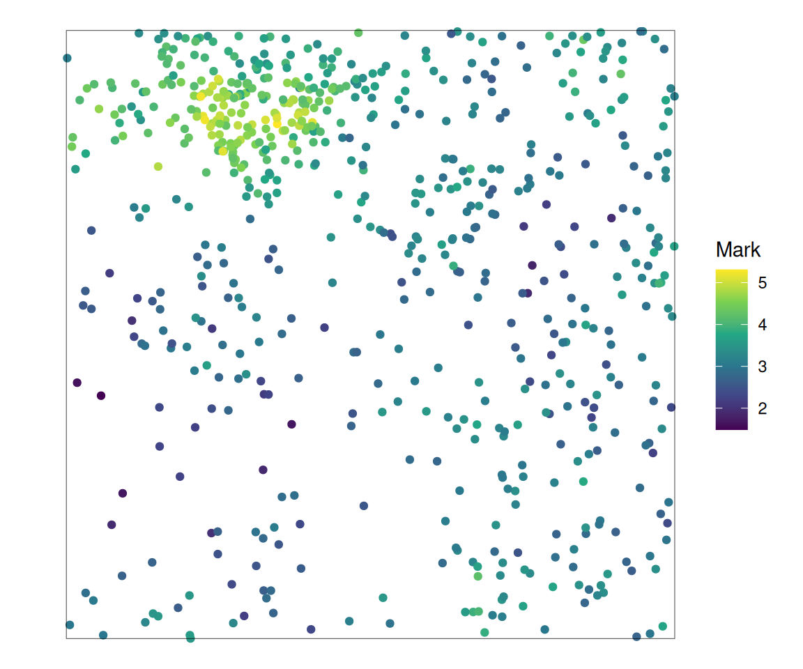
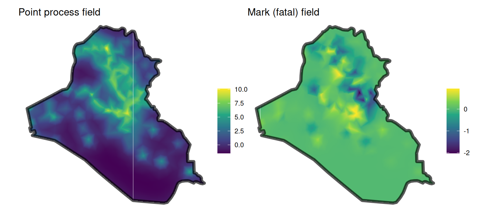
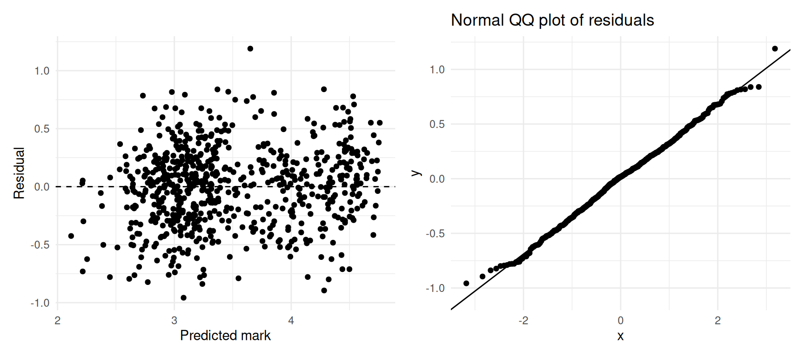
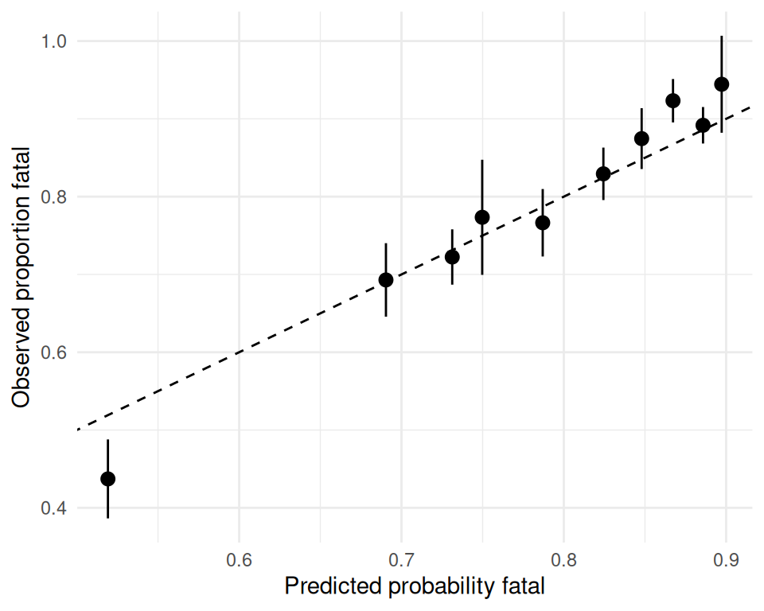

Packages used in this chapter
library(stelfi)
library(ggplot2)Often something is measured on each event as well as its location: the number of people killed in an attack, the size of a tree, or whether a disease case was severe. These measurements are called marks. A marked LGCP models the locations of the events and their marks together. This allows you to ask not only where events happen (as in Chapter 6) but also how the marks vary over space, and whether the marks are related to how many events there are (e.g., are attacks more deadly where attacks are more frequent?).
In stelfi the locations follow an LGCP exactly as in Chapter 6,
\[\lambda(s) = \text{exp}(\beta_{pp} + G_{pp}(s)),\]
where the subscript \(pp\) stands for “point process”. Each mark \(j\) then has its own linear predictor,
\[\eta_j(s) = \beta_{m_j} + \alpha_j \log \lambda(s) + G_{m_j}(s),\]
where \(\beta_{m_j}\) is the intercept for the mark, \(G_{m_j}(s)\) is an (optional) random field for the mark, \(\log \lambda(s) = \beta_{pp} + G_{pp}(s)\) is the log intensity of the point process, and \(\alpha_j\) links the mark to the point process: if \(\alpha_j > 0\) the mark tends to be larger where events are more common, if \(\alpha_j < 0\) it tends to be smaller, and if \(\alpha_j = 0\) the mark is unrelated to the intensity. The linear predictor is related to the mark through a distribution chosen using the methods argument:
methods |
Mark distribution | \(\eta_j(s)\) is | Fixed structural parameter (strfixed) |
|---|---|---|---|
0 |
Gaussian | the mean | the log of the standard deviation |
1 |
Poisson | the log of the mean | not used |
2 |
Binomial | the logit of the success probability | the number of trials |
3 |
Gamma | the log of the mean | the log of the scale |
get_coefs() reports the intercepts (betapp, betamarks), the link coefficients (marks_coefs_pp, the \(\alpha_j\)) and the parameters tau and kappa of each random field (the first for the point process). The range and standard deviation of each field are \(\sqrt{8}/\kappa\) and \(1/\sqrt{4\pi\kappa^2\tau^2}\), as in Chapter 6.
fit_mlgcp() needs everything that fit_lgcp() needs (Section 6.1.1) and some extra arguments:
locs, the event locations, a data frame (or matrix) with columns named x and y;marks, a matrix with one row per event (in the same order as locs) and one column per mark, even if there is only one mark;methods, a vector giving the distribution of each mark (see the table above);fields, a vector of 0s and 1s, one per mark, saying whether each mark has its own random field \(G_{m_j}(s)\) (1, the default) or not (0). Without its own field, a mark depends on location only through \(\alpha_j \log \lambda(s)\);strfixed, a matrix the same size as marks with the fixed structural parameter for each mark of each event (see the table above); andparameters, a list of starting values: betapp (a number), betamarks (a matrix with one column per mark), marks_coefs_pp (one per mark), and log_tau and log_kappa (one per field, the point process field first, so of length 1 + sum(fields)).Things to be aware of:
fit_lgcp() using all events.stelfi does not estimate the standard deviation of Gaussian marks (or the scale of gamma marks); you supply its log through strfixed. A natural choice is the standard deviation of the marks, which is an upper bound for the residual standard deviation, and it is sensible to check that the conclusions do not change for smaller values (Section 7.4).strfixed is a matrix of 1s).Data were simulated from a marked LGCP with a single Gaussian mark within a 3 by 3 square. The point process has intercept \(\beta_{pp} = 4\) and a field with range \(r_{pp} = 1.5\) and standard deviation \(\sigma_{pp} = 1\). The mark has intercept \(\beta_m = 1\), link \(\alpha = 0.5\) (so marks are larger where events are more common), its own field with range \(r_m = 1.5\) and standard deviation \(\sigma_m = 0.5\), and a residual standard deviation of 0.3. The simulation has three steps:
sim_lgcp() (only the simulated field, $x, is used). sim_lgcp() takes the field parameters on the internal scale, so the range and standard deviation are first converted to \(\kappa = \sqrt{8}/r\) and \(\tau = 1/(\sigma\sqrt{4\pi}\kappa)\) by the function spde_pars().fmesher::fm_basis().loc.d <- 3 * cbind(c(0, 1, 1, 0, 0), c(0, 0, 1, 1, 0))
domain <- sf::st_sf(geometry = sf::st_sfc(sf::st_polygon(list(loc.d))))
smesh <- fmesher::fm_mesh_2d(loc.domain = loc.d, offset = c(0.3, 1),
max.edge = c(0.3, 0.7), cutoff = 0.05)
truth <- c(betapp = 4, range_pp = 1.5, sigma_pp = 1,
betam = 1, range_m = 1.5, sigma_m = 0.5, alpha = 0.5, sd_m = 0.3)
spde_pars <- function(range, sigma) {
kappa <- unname(sqrt(8) / range); sigma <- unname(sigma)
c(log_tau = log(1 / (sigma * sqrt(4 * pi) * kappa)), log_kappa = log(kappa))
}
set.seed(1)
## 1. the fields at the mesh nodes
g_pp <- as.vector(sim_lgcp(c(beta = 0, spde_pars(truth["range_pp"], truth["sigma_pp"])),
sf = domain, smesh = smesh)$x)
g_m <- as.vector(sim_lgcp(c(beta = 0, spde_pars(truth["range_m"], truth["sigma_m"])),
sf = domain, smesh = smesh)$x)
## 2. the events, by thinning
lmax <- exp(truth["betapp"] + max(g_pp))
n0 <- rpois(1, lmax * 9) ## candidates over the 3 by 3 square
cand <- data.frame(x = runif(n0, 0, 3), y = runif(n0, 0, 3))
A <- fmesher::fm_basis(smesh, loc = as.matrix(cand))
log_lambda <- truth["betapp"] + as.vector(A %*% g_pp)
keep <- runif(n0) < exp(log_lambda) / lmax
sim <- cand[keep, ]
## 3. the marks
eta <- truth["betam"] + truth["alpha"] * log_lambda[keep] + as.vector(A[keep, ] %*% g_m)
sim$m <- rnorm(nrow(sim), mean = eta, sd = truth["sd_m"])
rownames(sim) <- NULLThe data are a data frame of 672 event locations and the corresponding marks:
x y m
1 0.8616250 2.6786497 3.727222
2 2.5772541 0.2420001 2.848326
3 1.5616079 0.2014157 3.515483
4 1.2658525 2.8298075 3.960114
5 1.4650062 2.3107670 3.951888
6 0.6848285 1.9421926 2.986840
stelfiThe mesh used to simulate the data is also used to fit the model, and the locations and marks are put into matrices. In practice the residual standard deviation of the marks is unknown, so, as suggested in Section 7.1.1, the standard deviation of the Gaussian mark is fixed at the standard deviation of the marks (through strfixed, on the log scale). The mark is given its own random field (fields = 1), so there are two fields: one for the point process and one for the mark.
locs <- cbind(x = sim$x, y = sim$y)
marks <- cbind(m = sim$m)
strfixed <- matrix(log(sd(sim$m)), nrow = nrow(locs), ncol = 1)
parameters <- list(betapp = 0, betamarks = matrix(0, nrow = 1, ncol = 1),
marks_coefs_pp = 0, log_tau = c(0, 0), log_kappa = c(0, 0))
fit <- fit_mlgcp(locs = locs, marks = marks, sf = domain, smesh = smesh,
parameters = parameters, methods = 0, fields = 1, strfixed = strfixed)
stelfi <- get_coefs(fit)
stelfi Estimate Std. Error
betamarks 0.7190827 0.40281119
betapp 4.0383804 0.26805757
marks_coefs_pp 0.5851238 0.09128521
tau 0.1544795 0.02443375
tau 0.6057058 0.26202397
kappa 2.4022381 0.56684950
kappa 2.1592333 0.94172066The estimated fields are returned by get_fields() as a matrix with one column per field (the point process field first).
inlabruinlabru (Bachl et al. (2019)) can fit joint models with several likelihoods that share components. Below, the point process is an LGCP ("cp") with its own intercept and field, and the mark is Gaussian with its own intercept, its own field, and a scaled copy of the point process field (copy = "field_pp", the scaling being estimated). The Gaussian standard deviation is fixed at the same value as for stelfi.
library(inlabru)
library(INLA)
pts <- sf::st_as_sf(sim, coords = c("x", "y"))
matern_pp <- inla.spde2.pcmatern(smesh, prior.sigma = c(5, 0.01), prior.range = c(0.1, 0.01))
matern_m <- inla.spde2.pcmatern(smesh, prior.sigma = c(5, 0.01), prior.range = c(0.1, 0.01))
cmp <- ~ Intercept_pp(1) + field_pp(geometry, model = matern_pp) +
Intercept_m(1) + field_copy(geometry, copy = "field_pp", fixed = FALSE) +
field_m(geometry, model = matern_m)
lik_pp <- bru_obs("cp", formula = geometry ~ Intercept_pp + field_pp,
data = pts, samplers = domain, domain = list(geometry = smesh))
lik_m <- bru_obs("gaussian", formula = m ~ Intercept_m + field_copy + field_m, data = pts,
control.family = list(hyper = list(prec = list(initial = -2 * log(sd(sim$m)),
fixed = TRUE))))
fit_bru <- bru(cmp, lik_pp, lik_m,
options = list(control.inla = list(int.strategy = "eb")))
fit_bru$summary.fixed[, 1:2] mean sd
Intercept_pp 4.074627 0.3314925
Intercept_m 3.085065 0.2480326 mean sd
Range for field_pp 1.8764875 0.53594053
Stdev for field_pp 0.7864042 0.17449347
Range for field_m 1.7222173 0.98612120
Stdev for field_m 0.2436282 0.08035900
Beta for field_copy 0.6968687 0.09230247fmt <- function(x) paste0(round(x[1], 3), " (", round(x[2], 3), ")")
tk <- stelfi[rownames(stelfi) %in% c("tau", "kappa"), ]
tau <- tk[rownames(tk) == "tau", 1]; kappa <- tk[rownames(tk) == "kappa", 1]
st_range <- sqrt(8) / kappa
st_sd <- 1 / sqrt(4 * pi * kappa^2 * tau^2)
hp <- fit_bru$summary.hyperpar
params <- data.frame(
Truth = c(truth["betapp"], truth["range_pp"], truth["sigma_pp"],
truth["betam"] + truth["alpha"] * truth["betapp"],
truth["range_m"], truth["sigma_m"], truth["alpha"]),
stelfi = c(fmt(stelfi["betapp", ]), round(st_range[1], 3), round(st_sd[1], 3),
round(stelfi["betamarks", 1] + stelfi["marks_coefs_pp", 1] * stelfi["betapp", 1], 3),
round(st_range[2], 3), round(st_sd[2], 3),
fmt(stelfi["marks_coefs_pp", ])),
inlabru = c(fmt(fit_bru$summary.fixed["Intercept_pp", 1:2]),
round(hp["Range for field_pp", 1], 3), round(hp["Stdev for field_pp", 1], 3),
fmt(fit_bru$summary.fixed["Intercept_m", 1:2]),
round(hp["Range for field_m", 1], 3), round(hp["Stdev for field_m", 1], 3),
fmt(hp["Beta for field_copy", 1:2])))
knitr::kable(t(params), col.names = c("$\\beta_{pp}$", "$r_{pp}$", "$\\sigma_{pp}$",
"$\\beta_{m}$", "$r_{m}$", "$\\sigma_{m}$", "link"),
escape = FALSE)| \(\beta_{pp}\) | \(r_{pp}\) | \(\sigma_{pp}\) | \(\beta_{m}\) | \(r_{m}\) | \(\sigma_{m}\) | link | |
|---|---|---|---|---|---|---|---|
| Truth | 4.0 | 1.5 | 1.0 | 3.0 | 1.5 | 0.5 | 0.5 |
| stelfi | 4.038 (0.268) | 1.177 | 0.76 | 3.082 | 1.31 | 0.216 | 0.585 (0.091) |
| inlabru | 4.075 (0.331) | 1.876 | 0.786 | 3.085 (0.248) | 1.722 | 0.244 | 0.697 (0.092) |
In stelfi the link \(\alpha\) multiplies the whole log intensity, \(\beta_{pp} + G_{pp}(s)\), whereas in inlabru the scaling multiplies only the field \(G_{pp}(s)\). The two models are the same, but the mark intercepts differ by \(\alpha \beta_{pp}\), so the table shows \(\beta_m + \alpha \beta_{pp}\) for stelfi and for the truth (\(1 + 0.5 \times 4 = 3\)). The two packages agree closely with each other, and with the truth, on the point process intercept and the mark intercept, and both correctly find that the marks are larger where events are more common (a positive link), although both overestimate the link. As in Section 6.2, the range and standard deviation of the fields are harder to pin down from a single dataset. Note in particular that both packages underestimate the standard deviation of the mark’s own field, \(\sigma_m\). This is a consequence of fixing the residual standard deviation at the standard deviation of the marks (0.745), which is much larger than the true value (0.3): the model then attributes some of the spatial variation in the marks to residual noise rather than to the field. This is why it is worth refitting with a smaller fixed standard deviation (see Section 7.4).
In Section 6.3.2 the locations of terrorism events in Iraq were modelled. The iraq_terrorism data also record the number of people killed in each attack (nkill). Here a marked LGCP is used to ask whether the probability that an attack is fatal varies over space, and whether attacks are more or less likely to be fatal where attacks are more frequent. The mark is binary: 1 if at least one person was killed and 0 otherwise.
The number killed is missing for some events. These events are removed (see Section 7.1.1 for the consequences). The locations are projected to km and the boundary of Iraq obtained exactly as in Section 6.3.2.
[1] 396marks_iraq
0 1
854 2958 A mesh slightly coarser than the adequate mesh of Sensitivity to the mesh in Section 6.3.2 (max.edge = c(60, 200), cutoff = 15) is used, to keep the fit quick. The mark is binomial (methods = 2) with one trial per event (the default strfixed), and has its own random field.
smesh_iraq <- fmesher::fm_mesh_2d(loc = locs_km, boundary = fmesher::fm_as_segm(iraq_sf_km),
max.edge = c(60, 200), cutoff = 15)
area_km2 <- as.numeric(sf::st_area(iraq_sf_km))
parameters_iraq <- list(betapp = log(nrow(locs_km) / area_km2),
betamarks = matrix(0, nrow = 1, ncol = 1), marks_coefs_pp = 0,
log_tau = c(0, 0), log_kappa = log(c(sqrt(8) / 50, sqrt(8) / 50)))
fit_iraq <- fit_mlgcp(locs = locs_km, marks = marks_iraq, sf = iraq_sf_km, smesh = smesh_iraq,
parameters = parameters_iraq, methods = 2, fields = 1)
coefs <- get_coefs(fit_iraq)
coefs Estimate Std. Error
betamarks 1.11262974 0.297716613
betapp -9.76955609 0.566186056
marks_coefs_pp -0.06383226 0.061472125
tau 3.16719124 0.276935078
tau 4.41661608 1.865067676
kappa 0.02957014 0.003702121
kappa 0.07346352 0.023726269The link coefficient \(\hat{\alpha} =\) -0.064 (standard error 0.061) is close to zero: there is little evidence that attacks are more (or less) likely to be fatal in places where attacks are more frequent. The intercept for the mark, 1.11 on the logit scale, together with the link term, describes the overall probability of a fatal attack, while the random field for the mark describes how this probability varies over space.
The plots below show the estimated random field of the point process (where attacks are more or less frequent than average) and of the mark (where attacks are more or less likely than average to be fatal).
fields_iraq <- get_fields(fit_iraq, smesh_iraq)
patchwork::wrap_plots(
show_field(fields_iraq[, 1], smesh = smesh_iraq, sf = iraq_sf_km, clip = TRUE) + theme_void() +
ggtitle("Point process field"),
show_field(fields_iraq[, 2], smesh = smesh_iraq, sf = iraq_sf_km, clip = TRUE) + theme_void() +
ggtitle("Mark (fatal) field"),
nrow = 1)
A marked LGCP has two parts, and each should be checked:
To check the marks, the fitted linear predictor \(\eta_j(s)\) is needed at each event. The function below calculates it from the fitted model (for models without covariates), following the definition of \(\eta_j(s)\) above.
mark_predictor <- function(fit, smesh, locs, mark = 1) {
pars <- fit$env$parList(par = fit$env$last.par.best) ## estimates, including the fields
fields <- fit$env$data$mark_field
log_lambda <- pars$betapp[1] + pars$x[, 1] ## log intensity of the point process at each node
eta <- pars$betamarks[1, mark] + pars$marks_coefs_pp[mark] * log_lambda
if (fields[mark] == 1) eta <- eta + pars$x[, 1 + cumsum(fields)[mark]] ## the mark's own field
as.vector(fmesher::fm_basis(smesh, loc = locs) %*% eta) ## interpolate to the events
}For the Gaussian mark the linear predictor is the predicted mean, so the residuals are the observed minus the predicted marks. If the model is adequate the residuals should show no pattern against the predicted values, and their standard deviation should be no larger than the fixed standard deviation used in strfixed.
residual_sd fixed_sd true_sd
0.3406189 0.7447414 0.3000000 patchwork::wrap_plots(
ggplot(data.frame(pred, res), aes(x = pred, y = res)) + geom_point() +
geom_hline(yintercept = 0, linetype = "dashed") + theme_minimal() +
xlab("Predicted mark") + ylab("Residual"),
ggplot(data.frame(res), aes(sample = res)) + stat_qq() + stat_qq_line() +
theme_minimal() + ggtitle("Normal QQ plot of residuals"),
nrow = 1)
The residuals show no obvious pattern and look roughly normal. Their standard deviation is much smaller than the fixed standard deviation, because the random fields explain much of the variation in the marks, and it is close to the true value. Since the standard deviation is fixed rather than estimated, it is worth refitting with strfixed set to the log of the residual standard deviation and checking that the conclusions do not change.
strfixed_res <- matrix(log(sd(res)), nrow = nrow(locs), ncol = 1)
fit_res <- fit_mlgcp(locs = locs, marks = marks, sf = domain, smesh = smesh,
parameters = parameters, methods = 0, fields = 1, strfixed = strfixed_res)
coefs_res <- get_coefs(fit_res)
kappa_res <- coefs_res[rownames(coefs_res) == "kappa", 1]
tau_res <- coefs_res[rownames(coefs_res) == "tau", 1]
rbind(original = c(link = stelfi["marks_coefs_pp", 1], sigma_m = st_sd[2]),
refitted = c(link = coefs_res["marks_coefs_pp", 1],
sigma_m = 1 / sqrt(4 * pi * kappa_res[2]^2 * tau_res[2]^2)),
truth = c(link = unname(truth["alpha"]), sigma_m = unname(truth["sigma_m"]))) link sigma_m.kappa
original 0.5851238 0.2156919
refitted 0.5901986 0.2941287
truth 0.5000000 0.5000000The link is essentially unchanged, but the estimated standard deviation of the mark’s field increases towards the true value: with less of the variation in the marks attributed to noise, more is attributed to the field.
For a binary mark the linear predictor is on the logit scale, so the predicted probability that an attack is fatal is \(\text{logit}^{-1}(\eta)\). A simple check of these predictions is to group the attacks by their predicted probability (here into ten groups of equal size) and compare the average predicted probability in each group with the observed proportion of fatal attacks. For a well calibrated model the points should lie close to the line \(y = x\).
p_fatal <- plogis(mark_predictor(fit_iraq, smesh_iraq, locs_km))
group <- cut(p_fatal, breaks = unique(quantile(p_fatal, probs = seq(0, 1, 0.1))),
include.lowest = TRUE)
calib <- data.frame(predicted = tapply(p_fatal, group, mean),
observed = tapply(marks_iraq[, 1], group, mean),
n = as.vector(table(group)))
calib$se <- sqrt(calib$observed * (1 - calib$observed) / calib$n)
ggplot(calib, aes(x = predicted, y = observed)) +
geom_abline(intercept = 0, slope = 1, linetype = "dashed") +
geom_pointrange(aes(ymin = observed - 2 * se, ymax = observed + 2 * se)) +
theme_minimal() + xlab("Predicted probability fatal") + ylab("Observed proportion fatal")
Points (with approximate 95% intervals) close to the dashed line indicate that the predicted probabilities are consistent with what was observed. Note that this is a fairly weak check, since the same data were used to fit the model; a more stringent check is to fit the model to part of the data (e.g., some years) and compare the predictions with the rest. The point process part of the model should also be checked using simulation envelopes (Section 6.4).